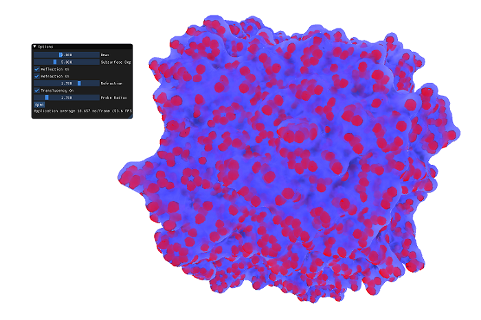

Introduction
In their paper "Improving Perception of Molecular Surface Visualizations by Incorporating Translucency Effects"[1] P. Hermosilla et al. provide a state of the art
method of visualizing molecules to help analyze their surface, as well as their underlying structure. It does so by
improving the perception of the surface using reflection and refraction effects and by removing visual noise by only
rendering the structures close to the molecule surface by employing transparency and translucency effects.
Implementation
We implemented the paper in C++ and uses OpenGL for rendering. In addition we used the gemmi library to
load molecule data in .cif format and the Dear ImGui library to provide a UI.
Instructions
The program can be run simply by running Molecular_VIS.exe. Due to using some newer OpenGL features,
a GPU that supports OpenGL 4.6 is required.
The 3D camera can be controlled by left click dragging the mouse in order to change the view.
The scroll wheel can be used to zoom in and out of the molecule.
In addition we provide a simple UI that allows the user to change some of the rendering parameters,
as well as turning some features on and off.
The parameters and feautres that can be changed are the following:
- Dmax: This value changes the max depth at which the structures inside the molecule are rendered
- Subsurface Depth: Changes the depth of the subsurface scattering
- Reflection: Switches reflection on and off
- Refraction: Switches refraction on and off
- Refraction index: Changes how much light is refracted by the molecule. Air has a refraction index of ~1, Water has a refraction index of ~1.333
- Translucency: Switches translucency on and off
-
Probe radius: Changes the probe for the creation of the SES surface, changing the amount of detail it's
generated with
There is also the option of loading different molecules. More molecules can be downloaded from the
Protein Data Bank
References
[1]HERMOSILLA, P., KRONE, M., GUALLAR, V., VAZQUEZ ´ , P.-P., VINACUA, A., ` AND ROPINSKI, T. 2017. Interactive gpu-based generation of solvent-excluded surfaces. The Visual Computer 33, 6 (Jun), 869–881.
Libraries
 1.8.15
1.8.15